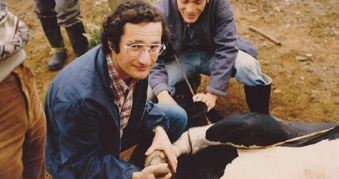

El Dr. Daniel Boroschek Krauskopf, fundador de Clínica Veterinaria Boroschek, cursó sus estudios secundarios en Centroamérica, Costa Rica, donde conoció la importancia del cuidado del medio ambiente y la vida silvestre, temas siempre presentes en nuestro trabajo diario. Se tituló de Medicina Veterinaria en la Universidad Austral de Chile el año 1985. Inmediatamente después de recibirse instaló su primera consulta veterinaria en la calle San Martín # 490, una pequeña sala multifunción que se debió acondicionar para un adecuado trabajo. En un principio, estuvo dedicado a la atención de clínica mayor y pequeños animales, pero con el pasar de los años, el trabajo se fue centralizando en la atención de pequeños animales, potenciando esta área. La pequeña consulta veterinaria fue creciendo y cinco años más tarde se trasladó a un amplio recinto ubicado en Carampangue # 301, donde funcionó hasta el año 2014. Hoy en día, nuestra Clínica Veterinaria se encuentra posicionada en la ciudad de Valdivia, como uno de los establecimientos más completos, ampliamente reconocido por la calidad del servicio que presta a sus clientes y su responsabilidad social con la región de los Ríos. En enero de 2013, abrimos una nueva Clínica Veterinaria, ubicada en calle Huemul esquina Errázuriz, utilizando liderada por la gestión de la Médico Veterinario Pamela Boroschek, diseñamos, modificamos y ampliamos una tradicional casona valdiviana para transformarla en un moderna e innovadora Clínica Veterinaria con nuevos servicios para nuestros fieles clientes.
Nuestra misión es dar una atención integral y permanente a su mascota durante todos los días del año, por eso, nos preocupamos de mejorar nuestro servicio, de tal manera que éste sea lo más eficiente, completo y acorde a las necesidades actuales de nuestros pacientes. Para cumplir nuestra misión contamos con un gran equipo de profesionales y personal dispuestos a satisfacer las necesidades de nuestros clientes y pacientes, además de una red de apoyo de especialistas en los casos que sea necesario.